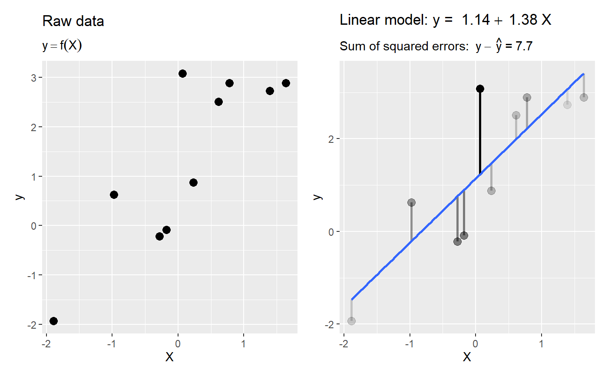
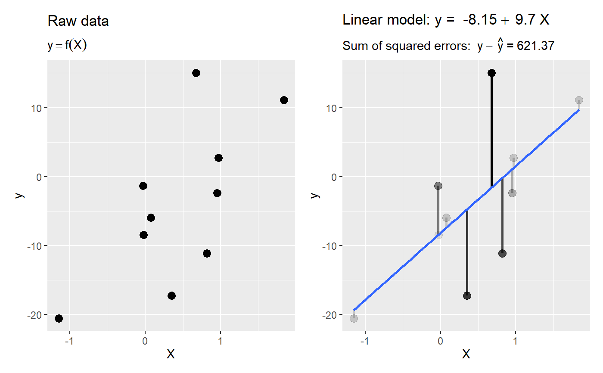
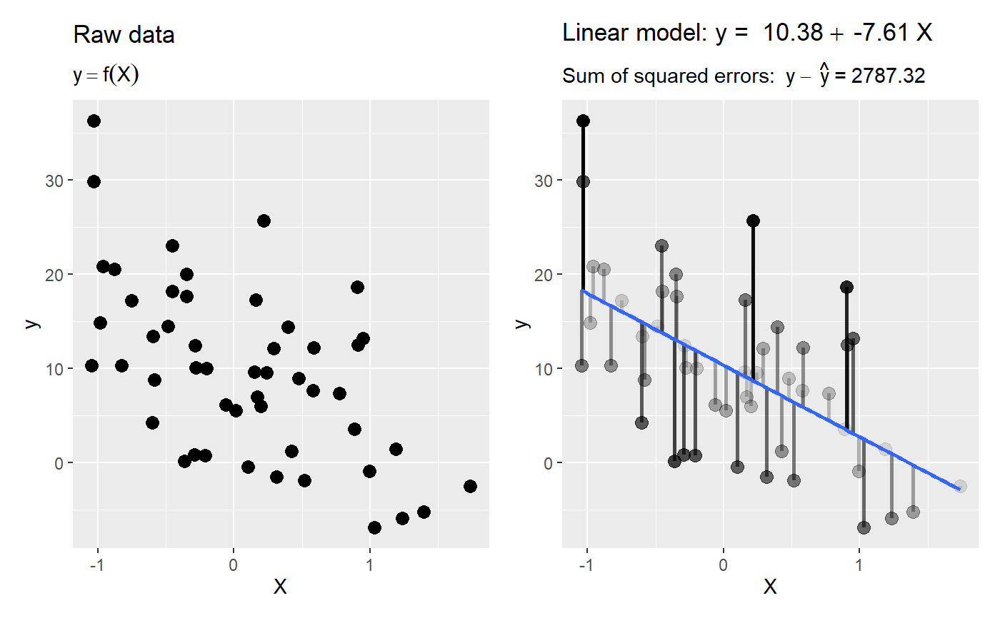

plot_ols.RdPlot a random scatter of Y and X variables, then plot the OLS line with errors
plot_ols( n = 10, betas = c(intercept = 1, slope = 1), x = c(mean = 0, sd = 1), error = c(mean = 0, sd = 1), seed = NULL, show_raw_data = TRUE, ... )
| n | number of observations. Defaults to 10 (smaller `n` is easier to visualize). |
|---|---|
| betas | vector of coefficients (intercept and slope). Defaults to |
| x | vector of parameters of the normal distribution of the independent variable. Defaults to |
| error | vector of parameters of the normal distribution of the error term. Defaults to |
| seed | seed for the random number generator. Defaults to NULL (i.e., varies each time you run it) |
| show_raw_data | plot the raw data alongside the plot with the regression line. Defaults to |
ggplot object if plot = TRUE, otherwise a data.frame
Lawrence R. De Geest
# default values are probably sufficient to the the main idea across plot_ols()# add some more points and make the relationship negative plot_ols(n=50, betas = c(intercept = 10, slope = -5), error = c(mean = 0, sd = 10))